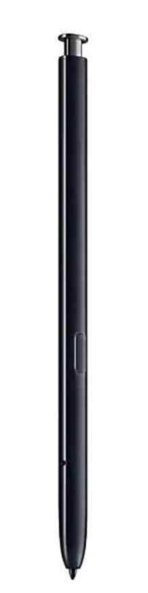
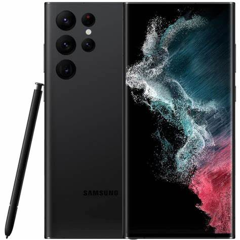
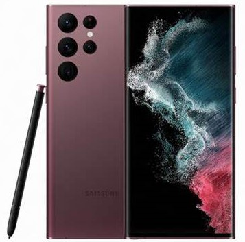
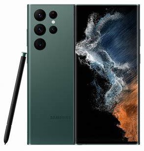
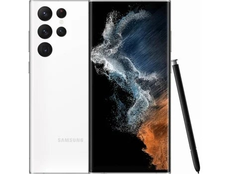

El poder del Note
ahora
en el S22 Ultra


S Pen
Dibuja como un Profesional
Por primera vez un Samsung Galaxy S cuenta con un S Pen integrado en el dispositivo. Puedes comenzar a crear grandes dibujos o simplemente escribir algo, extrayendo tu S Pen de la parte inferior de tu dispositivo. Y ahora cuentas con una mayor latencia que te permitira que tus trazos posean mayor textura y calidad.



Diseño
Futuro y elegancia juntos
Bordes redondeados, un exterior púlido y una variedad de colores sofisticados, son la clave para hacer de un dispositivo inteligente en un estándar del futuro, clase y elegancia.

Procesador
Chip superpotente
Este dispositivo posee integrado el potente CPU Exynos 2200, el cual promete un gran rendimiento y fluidez gracias a sus 4nm. Gráficos excepcionales y gran calidad de imágen es lo que puedes esperar del GPU AMD incorporado en tu S22 Ultra.